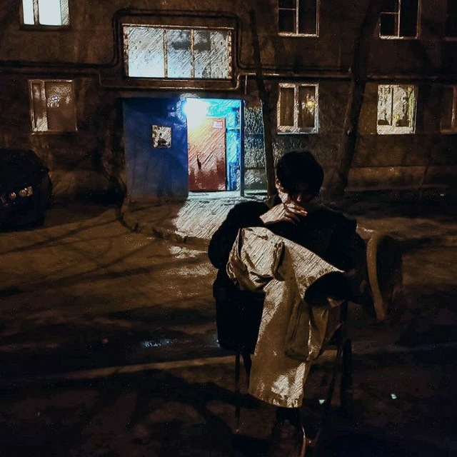
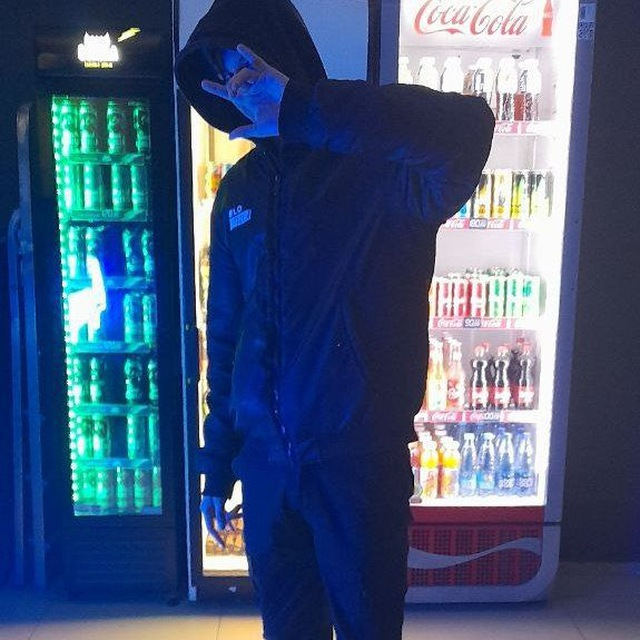

Кто такой Димон Дизель?
Димон Дизель — легендарный мужик, который родился с бензопилой в одной руке и банкой энергетика в другой. Его взгляд пробивает бетонные стены, а голос заводит двигатели просто так, от уважения.
"Я не качаюсь — я просто становлюсь больше, когда злюсь."
Фотогалерея


Факты о Диме
- Его слезы — это моторное масло.
- Он может открыть пиво взглядом.
- Его рукопожатие ломает пальцы (но это знак уважения).
- Он не спит — он просто ждет, пока мир станет жестче.